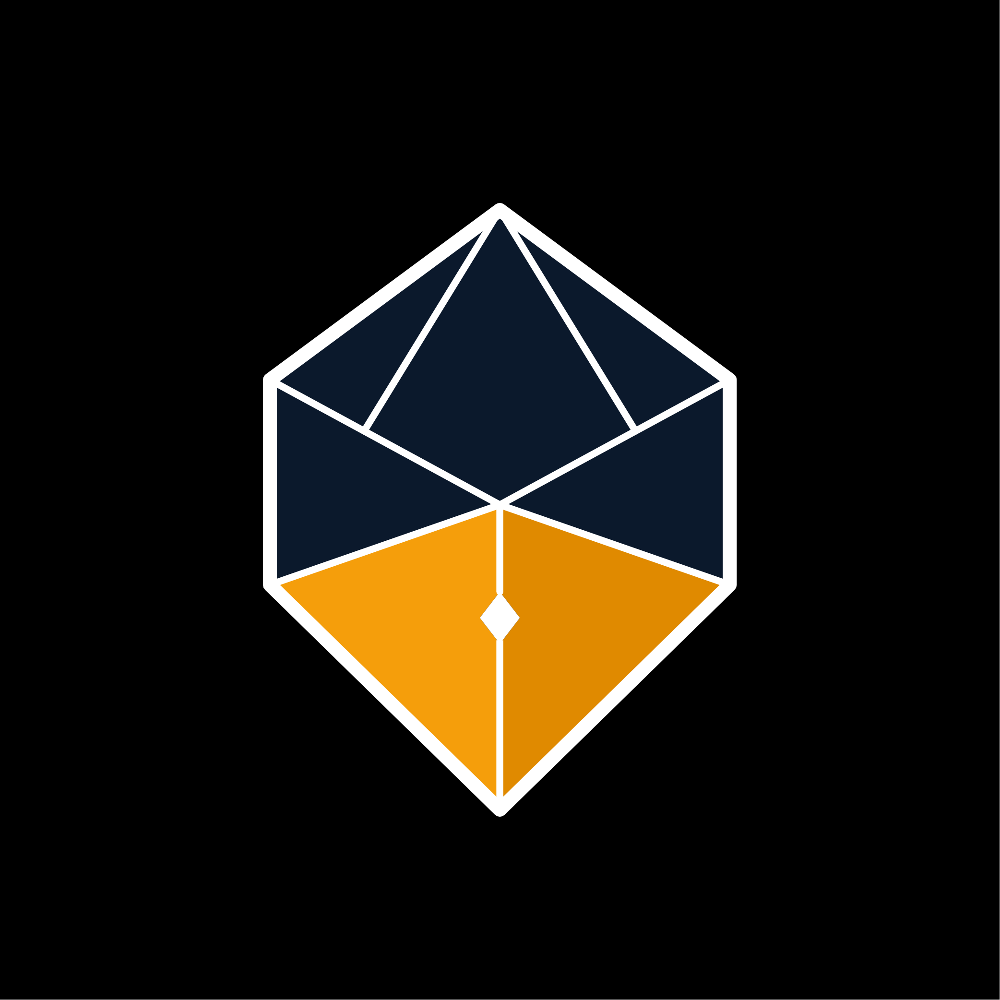
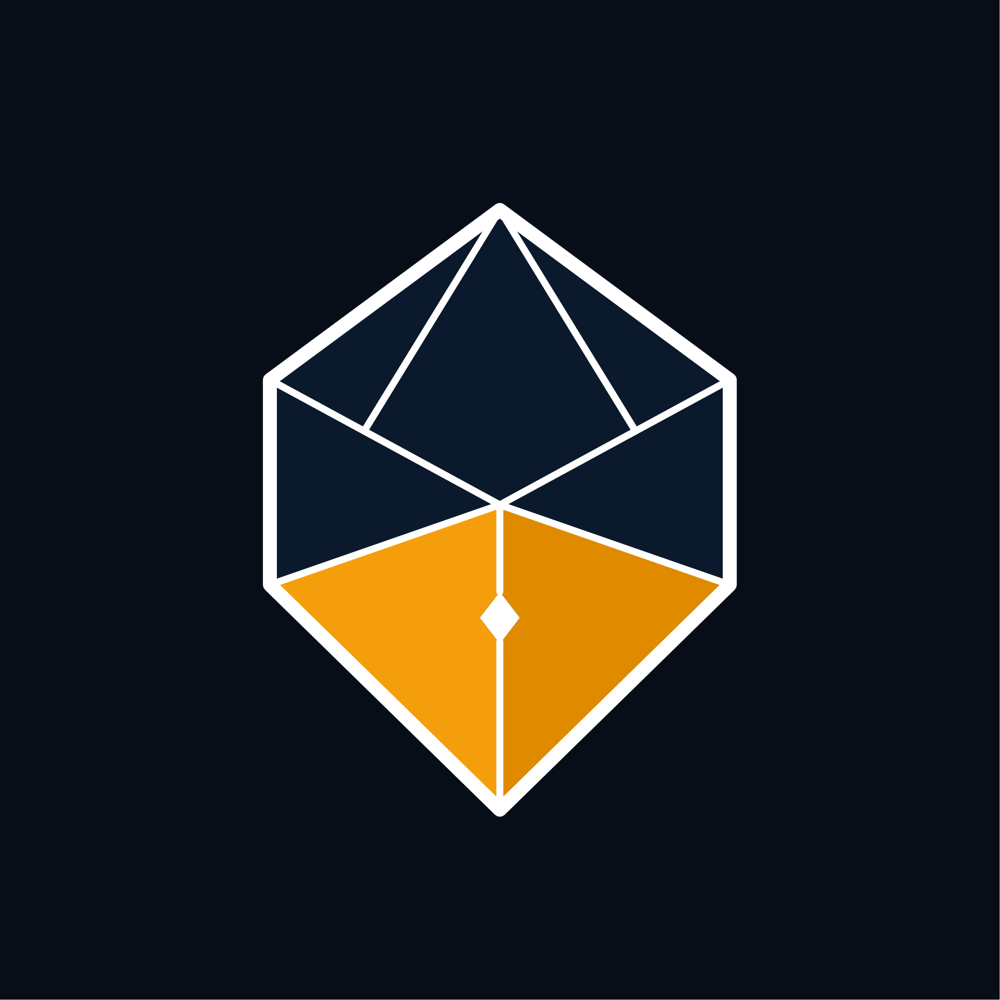
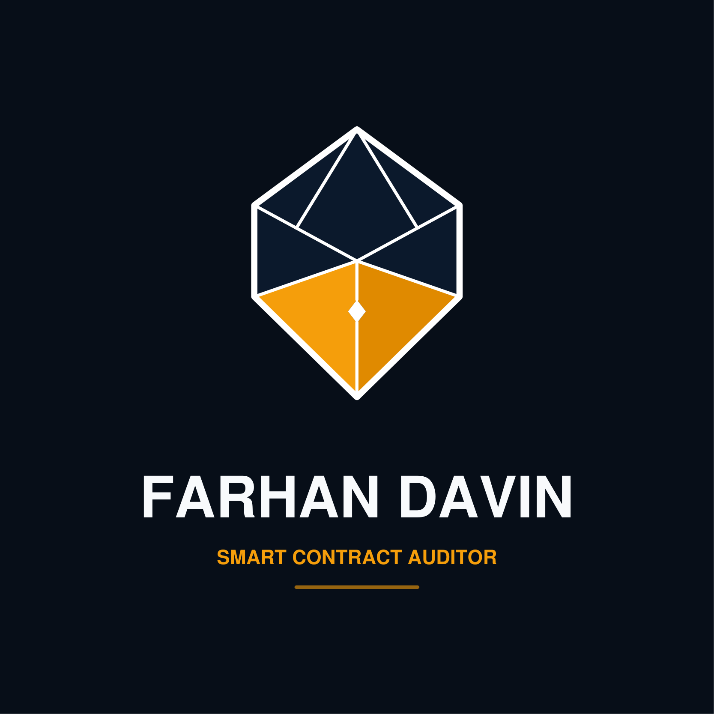
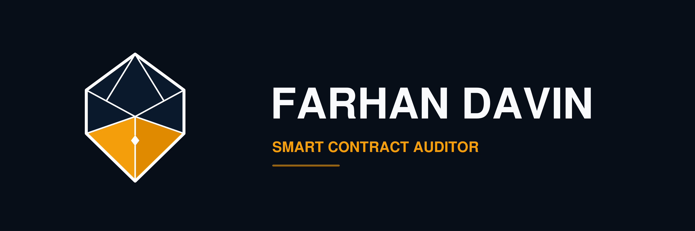
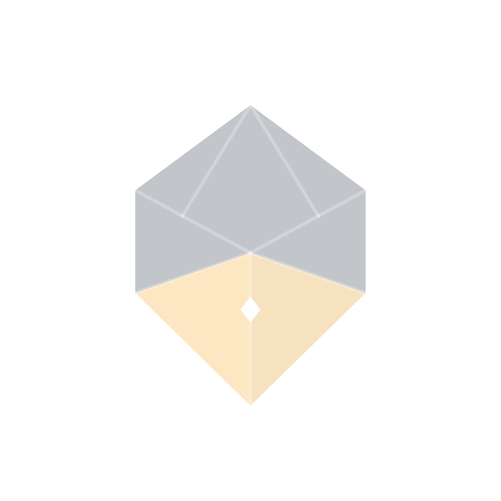
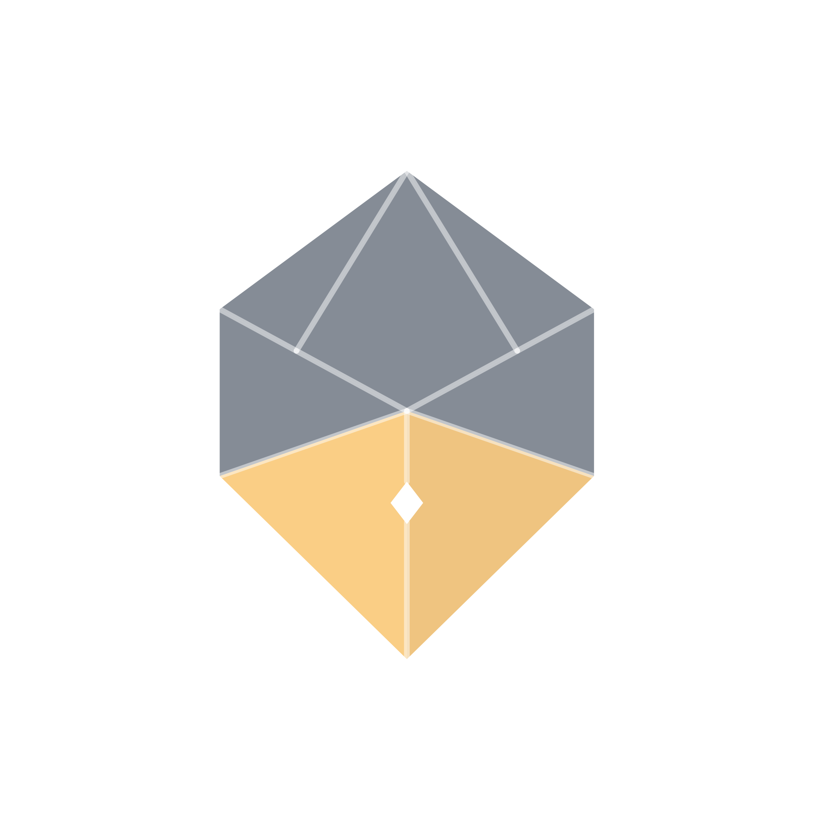
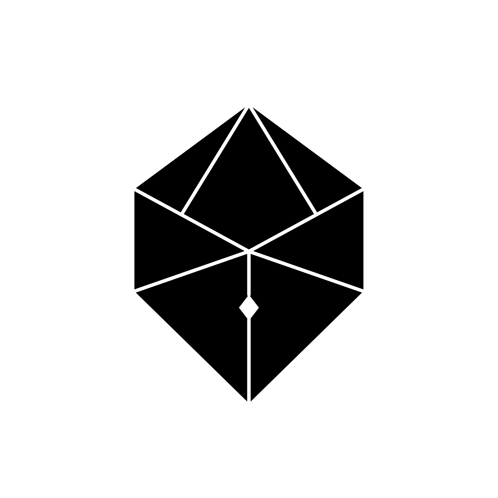
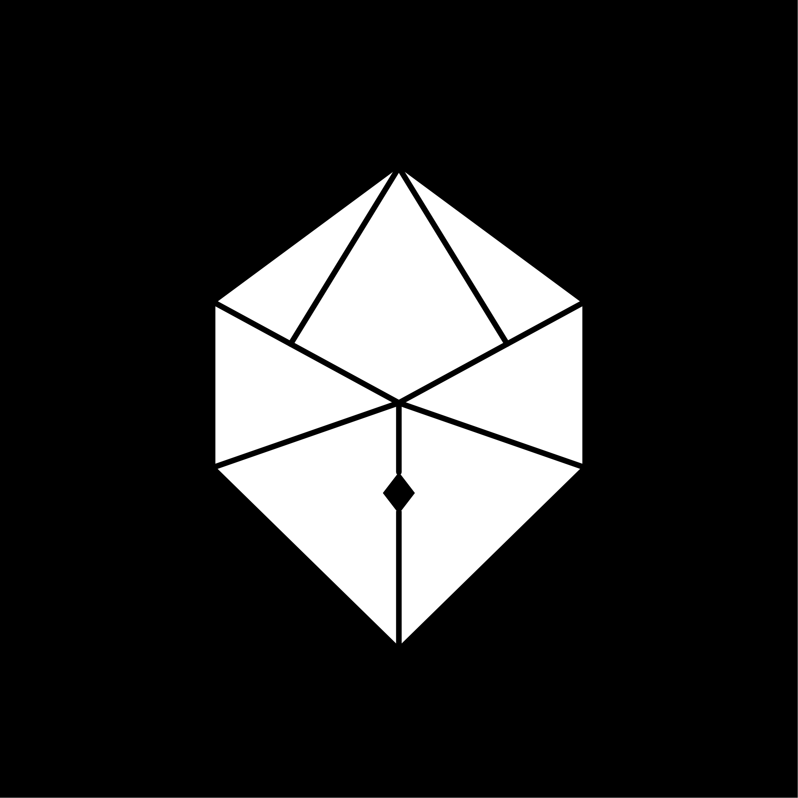
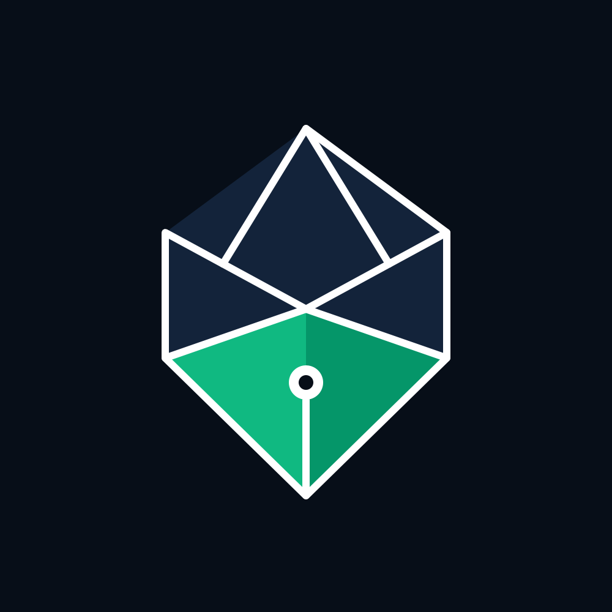

Seluruh variasi identitas visual resmi: Background Hitam (Dark Mode), Kontrol Opacity Watermark (10% - 50%), Master Transparan, Monokrom Cetak, dan Format Dokumen PDF.
Uji coba tingkat transparansi dan warna latar belakang secara langsung (real-time).









Untuk menambahkan logo ini sebagai watermark transparan di tengah halaman laporan audit PDF Anda, gunakan package eso-pic:
% Di preamble template LaTeX / Pandoc:
\usepackage{eso-pic}
\AddToShipoutPictureBG{
\AtPageCenter{
\makebox[0pt]{
% Gunakan nib-watermark-10pct.pdf agar sangat halus di balik tulisan
\includegraphics[width=0.45\paperwidth]{brand/executive_suite/nib-watermark-10pct.pdf}
}
}
}